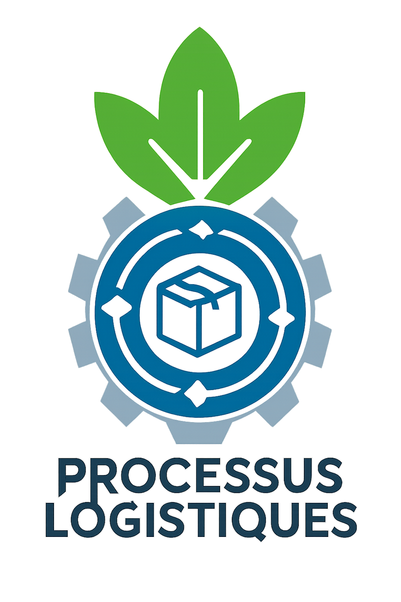

Processus Logistiques
Tous
Chaîne d'approvisionnement
Gestion des stocks
Gestion des achats
Transport
Equipements
Energie
Dons en Nature
Assurance Qualité
Gestion Parc Véhicules
Management Équipe Logistique
Gestion des bâtiments
Effacer les filtres
Astuce :
Filtrer par...
Activité, Acteurs
Type de contrôle
Localisation
Afficher toutes les activités
Mode Sombre

Fermer